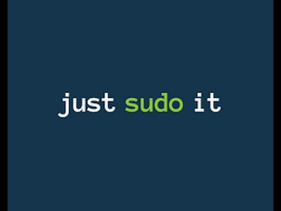

Linux kullanıcıları terminalden sudo ve su komutlarını kullanarak root kullanıcı yetkisi gerektiren işlemleri yapmaktadır. Sudo komutu normal sistem kullanıcılarının çeşitli komutları kullanabilmek için geçici olarak Rootyetkisi kazanmasını sağlar. Sudo her ihtiyacınıza yeter, boşuna root oturumu açıp sisteminizi kararsız hale getirme riskine girmeyin. Normal zamanda, normal yetkilerle çalışın. root yetkierine ihtiyaç duyarsanız sudo komutunu kullanarak istediğinizi yapabilirsiniz
Sudo komutu, uygulamak istediğiniz komut için geçici olarak root yetkilerini alacak ve işlem tamamlandığında hemen normal kullanıcı moduna geri dönecektir. Böylece, root kullanıcısından normal kullanıcıya dönmeyi unutup hatalı işlemlerin yapılması da önlenebilmektedir. Üstelik, sudo komutunu vererek bir işlem yapmak istediğinizde sudo grubu üyesi olduğunuz için kendi parolanızı kullanabilirsiniz. Yani root kullanıcısının parolasını girmeniz gerekmez.